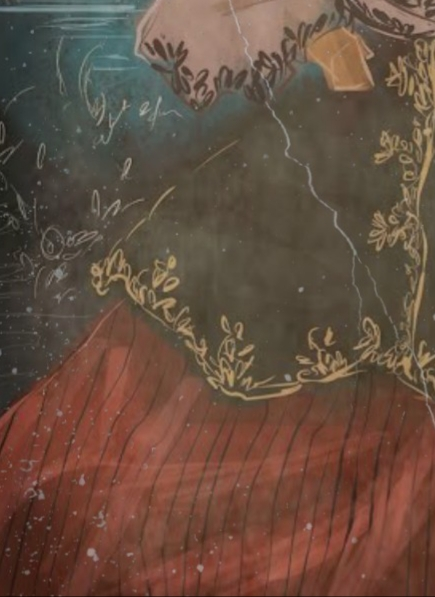
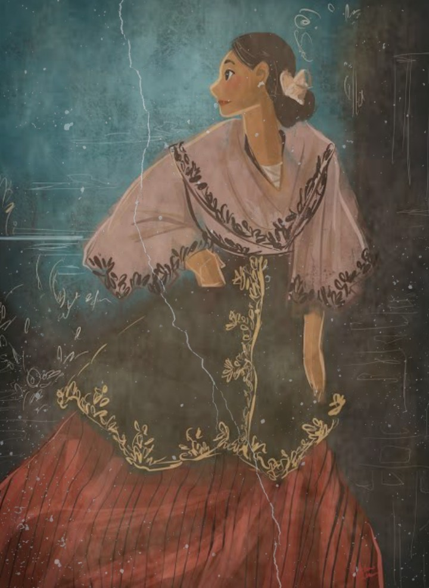
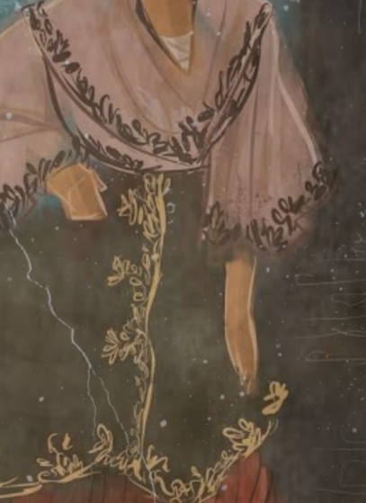

Kabanata 28
Ang Liham
Tunay na magarbo at agaw-pansin ang mga kaganapan sa pagdiriwang ng kapistahan sa San Diego. Sa katunayan ay nailimbag ng isang sikat na dyaryo sa Maynila ang pangyayari sa kapistahan sa nasabing bayan, dito ay inilarawan ang pagkamangha at pagkagiliw ng mga bisita sa kinalabasan ng pista.
Labis na papuri ang natamo ng kurang Franciscano sa abilidad nito sa pamumuno na siyang itinutukoy na isang dahilan ng tagumpay ng pagdiriwang. Hindi naman mabilang ang mga kilalang panauhin at buhat pa sa Maynila ang ibang nagsidalo. Nagkaroon ng malaking entablado na inilaan para sa pagtatanghal. Abala si Crisostomo sa pagbabasbas ng unang bato sa gusali ng kanyang ipinapatayong paaralan na magaganap sa huling araw ng kapistahan kaya’t hindi siya nakadalo. Napag-alaman naman ni Maria Clara ang kaunting karamdaman ng kasintahan.
Nagkaroon din ng prusisyon na sinundan ng misa na inawitan ng mga artista at sinaliwan ng orchestra. Naganap naman sa ikalawang araw ng kapistahan ang pinakamarangyang sayawan na naganap sa tahanan ni Kapitan Tiago kung saan si Maria Clara ang nangibabaw sa lahat. Winakasan naman ang pahayagan sa pagsasalaysay ng pagkakatuklas ng alkalde sa karamdaman ni Crisostomo na labis nitong ipinagalala bagama’t sinabi din namang maayos na ang kalagayan ng binata.
Isang liham naman ang ipinahatid ni Kapitan Martin Aristorenas sa kaibigang si Choy, ibinahagi niya ang pagkapanalo sa sugalan at sinabi din ang nabalitang magsusugal sana si Crisostomo ngunit hindi ito sumipot. Aniya ay marahil ay nagmana ito sa ama na wala ding hilig sa pagsusugal. Samantala, nakatanggap ng sulat si Crisostomo mula sa kasintahang si Maria Clara. Ibinahagi ni Maria Clara sa sulat ang karansan niya sa pista, aniya ay napakaraming nakaaabalang tao at kung hindi lamang kay Padre Damaso na pilit siyang nililibang, marahil ay natulog na lamang ang dalaga. Sinabi rin niya na pinapupunta niya si Andeng upang ipagluto si Crisostomo ng tsaa. Sa pahabol niya sa sulat ay sinabi ni Maria Clara na kung hindi dadalaw sa susunod na araw ang binate ay hindi siya dadalo sa pagbabasbas at paglalagay ng bato sa paaralan.
Repleksyon
Natunghayan sa kabanatang ito ang pagkamakulay at ang sigla ng pagdiriwang ng pista, at marahil ang kasanayang ito ay hindi nahinto, patunay na lamang ang paraan ng ating pagdiriwang ng pista hanggang sa panahon ngayon.
Sa aking pagsusuri naman ay napagtanto ko ang isa sa katangian ni Crisostomo, ang paglalaan ng oras sa mga prayoridad, kaysa sa mga bagay na panandaliang kasiyahan lamang ang maibibigay. Kahit na mayroon siyang masamang karamdaman ay masasalamin ang kanyang pagiging isang huwarang Pilipino sa paggugol niya ng panahon at pagiging determinadong mapagtagumpayan ang isang bagay na lubos na makatutulong sa iba, ang pagpapatayo ng paaralan.
Mahalagang Tauhan


